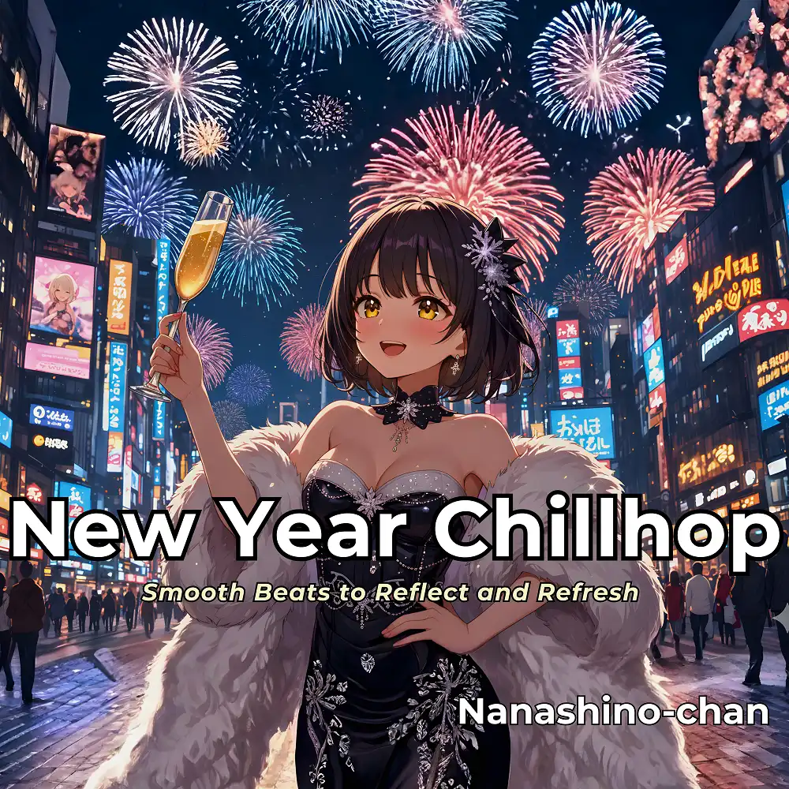

Chillhop
New Year Chillhop: Smooth Beats to Reflect and Refresh
Nanashino-chan
Nanashino-chanの「New Year Chillhop: Smooth Beats to Reflect and Refresh」。Chillhopを楽しめる全22曲のインストゥルメンタル作品です。「Soothing Reflections / Reflection Beats」などを収録。気になる曲を試聴して、配信サービスでお気に入りを見つけてください。
2025-12-26 リリース · 22 曲 · Instrumental
アルバムを試聴
気になる音楽を、ここから。
曲を選ぶまでジャケットを表示します。試聴にはYouTubeを使用します。
YOUTUBE PREVIEW
試聴する曲を選んでください
曲を選ぶまでジャケットを表示します。試聴にはYouTubeを使用します。
再生できない場合は、配信サービスでアルバムや曲を開いてください。
配信サービスでアルバムを探す
「検索」のリンクは検索結果を開きます。サービス内でアルバムや曲を選択してください。
収録曲一覧 22
- 01Soothing Reflections
- 02Reflection Beats
- 03Mellow Groove
- 04Serene Sounds
- 05Chill Reflections
- 06Smooth Transitions
- 07Midnight Chillhop
- 08Restful Beats
- 09New Dawn Flow
- 10Dreamy Vibes
- 11Cozy Jazzhop
- 12Winter Breeze
- 13Tranquil Piano
- 14Deep Relaxation
- 15Peaceful Reflections
- 16Soulful Jazz Moments
- 17Calm and Unwind
- 18Evening Serenity
- 19Lush Soundscapes
- 20Gentle Nightfall
- 21Midnight Renewal
- 22Winter's Final Chill
SNSで使いたい音源を探す
「Nanashino-chan ＋ 曲名」をコピーして、SNSアプリの音源検索に貼り付けてください。音源の表示は地域やアカウントにより異なります。コピー機能は利用許諾を付与するものではありません。